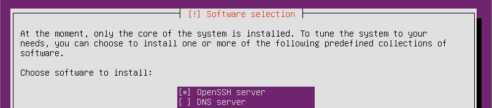
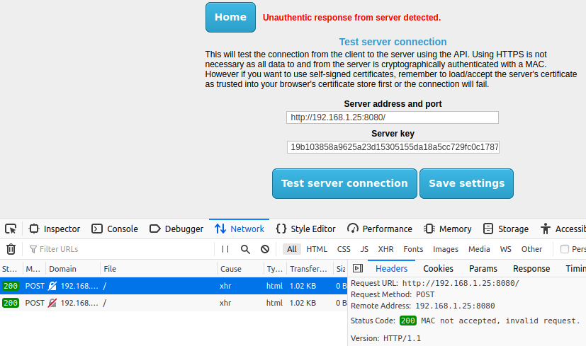

Server Installation Guide
This page explains in an easy step by step guide how to fully setup your
VPS or server and get the software running for
Jericho Comms on Ubuntu Server 16.04.x Long Term Support (LTS).
Open source is the best way as it's auditable and less likely to contain backdoors. Compiling your
own from source code is even safer if you know how to do that. If you do not like Ubuntu, you
can use whatever Linux or Unix distribution you want, it is really just setting up a Linux,
Apache, MySQL & PHP (LAMP) stack and configuring it to serve the API code.
You need approximately 15 minutes of time and some basic computer skills. Be sure to read each step
carefully. NB: As a security precaution
do not copy and paste commands from the site directly into the terminal.
Type them out manually or paste them into a plain text editor like gedit, nano or Notepad first to make sure they
are safe and don't contain any unexpected commands.
Table of Contents
- Sign up for a Virtual Private Server
- Download and install Ubuntu Server
- Connect to your server
- Uploading the program onto the server
- Verifying the integrity and authenticity of the file
- Extracting the server files
- Running the server installation script
- Test the server code
- Summary
Sign up for a Virtual Private Server
There are a number of quality VPS providers around. You will need to
do some research on your own. Try
finding one that is not in any of the
Five Eyes countries
(US, UK, Canada, Australia and New Zealand). Perhaps somewhere in Europe with better privacy laws
e.g. Finland. Better privacy laws mean they need a proper warrant to hack or shut down your
server whereas countries like the UK
can just do whatever they want.
Some of the other European countries co-operate with the NSA however
in a wider spying alliance.
So Brazil or Iceland may be a better bet.
You should only need the most basic server in terms of CPU speed, memory and disk space because
the software is not resource intensive. Around 10 Euros (11 USD) per month is probably fine. That
will get you around 1 CPU core, 512 MB of RAM and 10 GB of disk space which is plenty to
run the server software.
Avoid VPS providers that use OpenVZ because
each VPS on the same physical server shares the same Linux kernel. That means you cannot have
full control over the VPS to keep the system time properly synchronized with an NTP server.
KVM based VPSs use
their own kernel which gives you much more control.
Alternatively if you want to run your own server on your own network, that is even better.
This would be the most secure option as you can administer the server locally. This means one less
port open on the public network interface. The client software and server share a 512 bit symmetric API key
for authentication of data going back and forth but this must be fetched from the server after installation. When
managing the server via the internet, the security is only as secure as the SSH connection. SSH is hard to secure
against active MITM attacks unless you are
certain of the correct host key fingerprint. For your first connection to the VPS
you will not be sure of the server's true fingerprint. You could however try finding it by logging
in via the HTTPS web management console or asking your VPS provider directly. Then again they will
need to send it to you via encrypted email and you still need to verify their public key somehow.
So it ends up being a lot of extra effort. SSH also currently does not have ciphers that are secure against
quantum computers.
Download and install Ubuntu Server
If using a VPS, select one of the pre-made Ubuntu Server 16.04.x LTS images. The online provider will
do all the installation automatically for you and initialise your VPS. The current minor version at the time of
writing is Ubuntu Server 16.04.2 but later versions such as 16.04.3 etc should still work fine with this guide.
Otherwise if you're setting up your own server, download the latest version
of Ubuntu Server 16.04.x LTS. Write the image to a CD/DVD/USB drive, then boot from the install image on CD/DVD/USB drive and run
through the installation. This should be pretty self explanatory but there is a step-by-step guide with screenshots
here
if you need them. Make sure your server has a public, static IP address so your group's users
can connect to it reliably over the internet.
At the software selection screen be sure to select OpenSSH server so it gets installed and you can log into your server
remotely with SSH. SSH will likely be enabled by default on a VPS.

Connect to your server
Assuming your operating system is all installed, you can now log into your VPS/server with
SSH. If you are connecting to your server from a Windows
machine you should stop what you're doing and install Linux otherwise you risk compromising everything. However it
is possible to use PuTTY, for example:

From Linux you can simply use the command line: ssh -p 22 username@ipaddress. Swap out
username for the username on your server. You will have created a user account on installation or if using a VPS
they probably set up the root account so use that. Swap out ipaddress with the public IP address of
your server.
Uploading the program onto the server
Now it's time to install get the server code running. The easiest way to get it
onto the server would be to use the command line:
wget https://joshua-m-david.github.io/jerichoencryption/files/jericho-comms-v1.5.3.tar.gz
You also need to download the signature file to verify that the download is authentic:
wget https://joshua-m-david.github.io/jerichoencryption/files/jericho-comms-v1.5.3.tar.gz.asc
This will download the two files and put them inside your current working directory. You can list them with ls -l.
If the files are there you can skip to the next step.
If for some reason you are unable to download the files from the website you can always download
them from Freenet using the links on the
Download page, then copying the files manually to the server. If
you want to copy them to the server from your Windows machine you can use
WinSCP and connect to your server using the same credentials like you did
earlier with PuTTY. Then it's a basic drag and drop operation.
If wanting to transfer the files from your Linux machine to the server you can use the following command:
scp /path/on/local/machine/jericho-comms-v1.5.3.tar.gz username@ipaddress:~
Be sure to swap out username for the username on the server and swap out ipaddress for the IP address
of the server. It should prompt you for the password. The ~ character will put the file in the home directory for
your account so it will be available as soon as you log into the server. Instead of the ~ character you can swap
that for the destination path on the server if you wish e.g. /var/www/html/.
Verifying the integrity and authenticity of the file
It's very important you verify the integrity and authenticity of the downloaded file so you know the file is authentic. Otherwise an attacker could have performed a MITM attack and swapped out the file for one with a backdoor in the encryption code.
Verifying by file hashes
First verify that the file was downloaded correctly using the hashes found on the download page:
sha384sum jericho-comms-v1.5.3.tar.gz | grep "e40af6c0703acab33fa79ac52f16630059c879d764b76703c30bbb2e521f34753cfc9c4f651149c143bb267be17f14ad"
If the checksum matches it will display the matching hash output on a line on the command line, for example:
e40af6c0703acab33fa79ac52f16630059c879d764b76703c30bbb2e521f34753cfc9c4f651149c143bb267be17f14ad jericho-comms-v1.5.3.tar.gz
You can also verify using SHA2-512 and
Whirlpool hashes on the download page by using
sha512sum and whirlpoolsum commands in the format above, along with the corresponding
hashes found on the download page. It will tell you to install whirlpoolsum so just follow the
instructions on the screen.
If nothing is returned on the command line, then the file is a mismatch and you will have to re-download it.
You can try downloading it from another source such as FreeNet as well (see the
download page for a link).
Verifying by GnuPG signature
This is a stronger method to verify that the download was actually created by us. Otherwise the server could have
been hacked and they simply replaced the download links with malware and updated the file hashes. This will be
strong enough as proof unless there is a quantum computer available
with over 8192 logical qubits to break the 4096 bit RSA key.
The key ID for each download is listed on the download page. Import our public key
which can be used to verify the file:
gpg --keyserver x-hkp://pool.sks-keyservers.net --recv-keys 0xDC768471C467B6D0
After importing the key you should verify that the key fingerprint is correct with
gpg --fingerprint 0xDC768471C467B6D0. You should see:
pub 4096R/0xDC768471C467B6D0 2013-09-25 [expires: 2018-03-27]
Key fingerprint = CF3F 79EE 0114 59BA 0A59 9E9C DC76 8471 C467 B6D0
uid Joshua M. David (Jericho Comms) <joshua.m.david[at]tutanota.de>
uid Joshua M. David (Jericho Encryption) <jerichoencryption[at]rediffmail.com>
sub 4096R/0xA5A2DFDDBE456DA7 2013-09-25 [expires: 2018-03-27]
NB: The email addresses have had the @ symbol replaced with [at] to reduce spam mail. Now
run gpg --verify jericho-comms-v1.5.3.tar.gz.asc jericho-comms-v1.5.3.tar.gz to verify the
signature. This should give you a message saying Good signature similar to the following:
gpg: Signature made Sun 23 Apr 2017 {time}
gpg: using RSA key 0xDC768471C467B6D0
gpg: Good signature from "Joshua M. David (Jericho Comms) <joshua.m.david[at]tutanota.de>"
gpg: aka "Joshua M. David (Jericho Encryption) <jerichoencryption[at]rediffmail.com>"
gpg: WARNING: This key is not certified with a trusted signature!
gpg: There is no indication that the signature belongs to the owner.
Primary key fingerprint: CF3F 79EE 0114 59BA 0A59 9E9C DC76 8471 C467 B6D0
NB: the time has been replaced with {time} as it may appear relative to your timezone. It will also likely show a
warning because you have not assigned a trust index to this person.
This means that GnuPG verified that the key made that signature, but it's up to you to decide
if that key really belongs to the developer. The best method is usually to meet the developer
in person and exchange key fingerprints. However, sometimes this is not possible, so you can also
check the fingerprint on onename.com/joshua_m_david and
keybase.io/joshua_m_david. Both of these identities and
fingerprints are published on the Bitcoin blockchain. Do not rely on what you see on the
websites alone which is only protected by TLS and can be easily altered in real-time by the
Five Eyes agencies. Make sure you download the client apps to verify the public keys on the
blockchain. If you can review the source code of those apps, even better.
Extracting the server files
Now you need to extract files from inside the jericho-comms-v1.5.3.tar.gz archive file. This can be done using:
tar -zxvf jericho-comms-v1.5.3.tar.gz
That will extract the files into a directory called jericho-comms-v1.5.3 which is in your current
working directory.
Running the server installation script
Run the server API software installation script using:
sudo ./jericho-comms-v1.5.3/server/setup.sh
This script is designed to be run on a clean install of the Linux server. It will prompt you a number of
simple questions and automate the installation of Apache, MySQL, PHP and the Jericho Comms server API software. It
will also harden the installation using some simple firewall rules to block all incoming traffic except HTTP and
SSH.
Test the server code
Now you can test the connection to the server. The client program will do that automatically for you.
Download the client code onto your PC and verify it using the
same method as earlier. Extract the files and in the client directory,
open the index.html file in your web browser. From the main menu of the client program, select the
Test Server connection option. Now enter the IP address and server key that are printed at the end of the
server installation script:

Now click the Test server connection button. You should see a message saying
Server and database connection successful.
If it is still not working, you can try setting the testResponseHeaders key to true
in the $applicationConfig array of the /var/www/html/config/config.php file on the
server. This enables a more specific error message to be sent back with the HTTP/1.1 404 error response code.
The Web Developer console in Firefox can view the error message sent back. This is found under
Tools -> Web Developer -> Web Console or simply Ctrl + Shift + K to open it. Once installed, simply
press F12 and it will open. Then retry the connection and view the error. That will give you a clue about
what needs to be fixed:

If you notice some sort of database error it probably means your database password (in the config.php
file) is incorrect. Either that or other database connection details may be incorrect. Basic shared hosting
users (non VPS) might also need to edit the UNIX socket and port numbers in the config.php file
with settings provided by the hosting provider.
If the error is something about the timestamp being incorrect, perhaps your PC and the server are not
synchronized to an NTP server. Try updating both then try again.
If the MAC is incorrect then you likely don't have the same key on the server as the client.
Remember to set the testResponseHeaders key to false once you have resolved the
issue, otherwise this leaves clues for an attacker.
Summary
To sum up you configured Linux, Apache, PHP, MySQL and the server side API software.
There are probably other things that can be done to lock the server
down even further. For example,
using SSH keys
for logging into the server with SSH. You should do your own research in this area. The
server functions as dead-drop for the encrypted communications.
Nothing actually sensitive is stored on it, only encrypted messages. The messages are secured by a one-time pad and
can't be decrypted without knowledge of the correct key.
However you do not want to advertise the server's existence. You only want yourself and your chat partner(s) to know
about it. If the NSA find out about it and their
TAO team decide to target you, there won't
be much you can do to stop them. They have teams of hackers working on
zero-day exploits for most software and firewalls. If
they want in, they will probably find a way. If you find they are targeting your server it is best to abandon the
server and then create a new one somewhere else. The server IP and key can be easily replaced in the client interface.
You can continue with the client installation guide now.